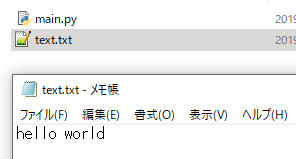

[Python] 16. IO(ファイル読み取り、書き込み)を扱う方法
こんにちは。明月です。
この投稿はPythonでIO(ファイル読み取り、書き込み)を扱う方法に関する説明です。
プログラム言語で重要なリソースならIO(ファイルを扱う)とソケット通信ではないかと思います。
特にプログラムを作成する時に主に使う言語はJavaやC#ですが、そのプログラムで使うテストデータを作ることや仮想マシンを作る時にスクリプト言語としてPythonをよく使う方です。
スクリプト言語はパフォーマンスやメモリ管理の側ではコンパイル言語より疑問点があります。でも、テストデータ(jsonやxmlデータ)を作ることやサーバを管理するshellスクリプト管理、Sqlスクリプト管理、ミドルウェアやサーバプログラムの環境設定ファイル管理などでは簡単にプログラムを実装ができる言語でPythonがいいではないかと思います。
そのため、IOがPythonの言語で一番重要ではないと思います。
ファイルは入出力(Input/Output)が基本の流れです。入力はファイルからデータを読み取ることだし、出力はデータをファイルに書き込むことです。
# ファイルコネクションをopenする。
handle = open("text.txt", "w")
# handleにwrite関数を使ってhello worldという文字列を入力する。
handle.write("hello world")
# ファイルはリソースタイプなので使った後で必ずコネクションを閉めなければならない。
# コネクションをちゃんと閉めないと当該なファイルを使うことができない。
handle.close()
上でopen関数を利用してファイルリソースを取得します。open関数のパラメータは使うファイル名とファイルオプションです。
ファイルオプションタイプは下記通りになります。
| タイプ | 説明 |
|---|---|
| w | ファイル書き込み(ファイルがなければ生成するし、存在すれば既存ファイルを削除して新しく生成する。) |
| a | ファイル書き込み(ファイルがなければ生成するし、存在すれば既存内容からデータを追加する。) |
| モード | 説明 |
|---|---|
| t | 一般テキストタイプ(省略可能) |
| b | バイナリタイプ(テキスト文字以外のデータを作る時に使う。) |
上の例でタイプとモードはwで、ファイルの書き込みを設定しました。実際にはwtで設定して、テキストを作成するという設定をすべきですが、tは省略が可能なのでwだけで設定が可能です。
ファイル名の場合はすべてのパスを使用する場合は、絶対パスでファイルを作成することができます。（d：\Python\blog\text.txt）または、相対パスで生成することもできます。（./text.txtあるいはtext.txt）

作成することができました。
今回はファイルを読み取りしましょう。
# ファイルコネクションをopenする。オプションはrで設定した。
handle = open("text.txt", "r")
# read関数はファイルを読み取りする。
data =handle.read()
# コネクションを閉める。
handle.close()
# コンソール出力
print(data)
ファイルからテキストデータを読み取って画面に出力しました。
基本的にPythonでファイルを入出力は上の通りに動きます。
IOコネクションで重要なことはリソースをopenすると必ず閉めなければならないことです。 Pythonではその機能をしやすくする機能があります。
# ファイルで文字を書き込む関数
def write_text(msg):
# withはstack領域を外すとコネクションを自動にcloseしてくれる。オプションタイプをaを使ったから呼び出すたびに内容が追加する。
with open("text.txt", "a") as handle:
# print関数を使ってfileパラメータでファイルリソースをいれ、endはprintが終了する時最後につける文字列だ。参考に"\n"は改行だ。
# endを設定しなければprintは基本的に\nを付ける。
print(msg, file=handle, end="\n")
# 関数呼び出す。
write_text("Good morning!!")
write_text("I will write a file")
write_text("Thank you")
ファイル接続をopen、closeで制御することもいいですが、途中でエラーが発生する時にcloseを呼び出さない時があります。try〜finallyを使用して接続を制御することができますが、それよりwith asを使えばしやすく接続を管理することができます。
print関数を使用してファイルに書き込みができます。「handle.write（msg + "\n"）」の形をprintで使うことです。
# ファイルのコネクションを自動に占めるキーワード
with open("text.txt", "r") as handle:
# 一行目ずつ、読み取るためwhileループを使った。
while True:
# 一行目ずつ読み取る。
line = handle.readline()
# lineに値がなければループは止まる。
if not line:
break
# 画面出力
print(line)
結果を見れば二行目ずつ改行されたことを確認できます。理由は、ファイルでもう改行があるのに、print関数でまた改行するので二行目ずつ改行されました。
# ファイルのコネクションを自動に占めるキーワード
with open("text.txt", "r") as handle:
# リスト形式に変換することもできる。
lines = handle.readlines()
# コンソール出力
print(lines)
今回はテキストファイルではなくイメージを使いましょう。
# データを一回で読み取るサイズ
chunk = 100
image = None
# モードでb(バイナリ)を追加した。
with open("nowonbuntistory.png", "rb") as handle:
# ファイルを最後まで読み取るまでループが回る。
while True:
# データを読み取る。
binary = handle.read(chunk)
# データがなければループを止まる。
if not binary:
break
# 始めはバイナリデータで格納する。
if image is None:
image = binary
else:
# 続けて追加
image += binary
# コンソール出力
print(image)
バイナリデータを出力しました。バイナリデータは人が理解することはできません。（マトリックスのネオなら可能かも。。。）
画像ファイルの場合はデータが大きい場合が多いのでread関数に読み取るサイズを設定しました。この方法はテキストの場合も可能です。
読み取るサイズを設定する理由は不要なメモリの無駄に使うことをなくすためです。最近はパソコンのメモリが8GBほど余裕があるため、画像ファイルの一つぐらいは。。。
今回は読み込んだデータをファイルに出力しましょう。
# データを一回で読み取るサイズ
chunk = 100
image = None
# モードでb(バイナリ)を追加した。
with open("nowonbuntistory.png", "rb") as handle:
# ファイルを最後まで読み取るまでループが回る。
while True:
# データを読み取る。
binary = handle.read(chunk)
# データがなければループを止まる。
if not binary:
break
# 始めはバイナリデータで格納する。
if image is None:
image = binary
else:
# 続けて追加
image += binary
# バイナリのサイズを取得する。
size = len(image)
# offsetは現在読み取る位置だ。
offset = 0
# モードでb(バイナリ)を追加してバイナリファイルを作成する。
with open("nowonbuntistory_copy.png", "wb") as handle:
# ファイルを最後まで読み取るまでループが回る。
while True:
# offsetはファイルサイズを超える時ループを止まる。
if offset > size:
break
# imageの区間を100bずつ切って出力する。
handle.write(image[offset:offset+chunk])
# offsetを移動
offset += chunk
イメージファイルがファイル名_copyファイルにコピーされたことを確認できます。
ここまでPythonでIO(ファイル読み取り、書き込み)を扱う方法に関する説明でした。
ご不明なところや間違いところがあればコメントしてください。
- [Python] 21. データベース(mariaDB)を連結する方法2020/06/24 18:51:50
- [Python] 20. stringフォマード(Formatting)と補間法(interpolation)2020/06/23 19:03:21
- [Python] 19. 非同期IOのasync/await(asyncio)を使う方法2020/06/22 18:10:12
- [Python] 18. ネットワーク(Socket)通信する方法2020/06/18 19:53:56
- [Python] 17. スレッド(Thread)とロック(lock)、そしてデッドロック(deadlock)2020/06/18 00:19:45
- [Python] 16. IO(ファイル読み取り、書き込み)を扱う方法2020/06/16 18:37:00
- [Python] 15. クラスを継承する方法2020/06/15 18:20:07
- [Python] 14. クラスプロパティ(Property)2020/06/12 17:45:13
- [Python] 13. クラス関数(class method)とダック・タイピング、そして特殊メソッド2020/06/11 19:42:29
- [Python] 12. クラス(Class)を使う方法2020/06/10 19:33:33
- [Python] 11. デコレーター（Decorator）を使う方法2020/06/09 17:27:18
- [Python] 10. モジュールとパッケージ(import)2020/06/08 19:07:50
- [Python] 09. 例外処理する方法2020/06/05 17:11:47
- [Python] 08. ジェネレータ(Generator)2020/06/04 18:46:08
- [Python] 07. globalとnonlocal2020/06/03 20:34:49
- [Python] INI(環境設定ファイル)を扱う方法2020/06/30 18:26:01
- [Python] Jsonを扱う方法2020/06/29 19:18:15
- [Python] XMLファイルを扱う方法2020/06/26 19:18:14
- [Python] IOを利用してCSVファイルを扱う方法2020/06/25 18:20:30
- [Python] 21. データベース(mariaDB)を連結する方法2020/06/24 18:51:50
- [Python] 20. stringフォマード(Formatting)と補間法(interpolation)2020/06/23 19:03:21
- [Python] 19. 非同期IOのasync/await(asyncio)を使う方法2020/06/22 18:10:12
- [Python] 18. ネットワーク(Socket)通信する方法2020/06/18 19:53:56
- [Python] 17. スレッド(Thread)とロック(lock)、そしてデッドロック(deadlock)2020/06/18 00:19:45
- [Python] 16. IO(ファイル読み取り、書き込み)を扱う方法2020/06/16 18:37:00
- [Python] 15. クラスを継承する方法2020/06/15 18:20:07
- [Python] 14. クラスプロパティ(Property)2020/06/12 17:45:13
- [Python] 13. クラス関数(class method)とダック・タイピング、そして特殊メソッド2020/06/11 19:42:29
- [Python] 12. クラス(Class)を使う方法2020/06/10 19:33:33
- [Python] 11. デコレーター（Decorator）を使う方法2020/06/09 17:27:18